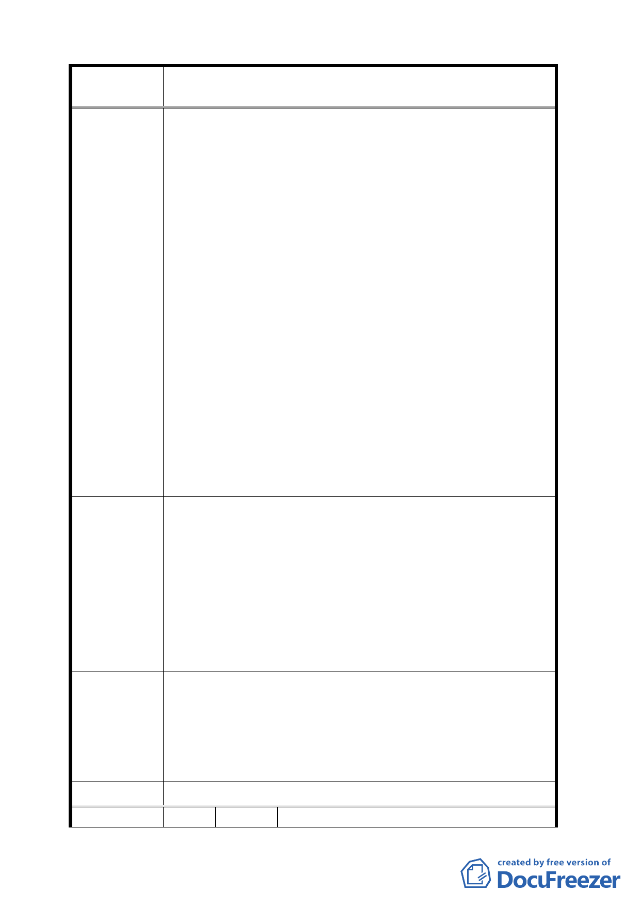

案
名
擬定臺北市中正區齊東街保存區及日式宿舍風貌保
存特定專用區細部計畫案
國而尚未被摧毀的歷史街道。
二、 今天政府欲回應民間社區呼籲保存的聲音，除了指定
歷史建築與古蹟之外，而根本地以變更都市計畫的方
式更是一種積極的作為。但是，若未能擴大古蹟周邊
地區的社區共同面對與回應保存的意義，那麼即便是
都市計畫變更了，古蹟周邊的社區未能有相對應的付
出公部門大量資源的投入是否符合都市計畫最基本
的公共利益原則？
三、 過去錯誤與盲目的都市計畫，加上房地產的炒作，都
市開發在臺北市對於自然、生態、文化的破壞，大家
有目共睹。齊東街位處城市中心區域，對於房地產開
發的壓力和危機，尤其必須加以適當管制，再者，古
蹟保存並不是將建築物作為一個精美的藝術品或收
藏物，而不只是個建築空殼被供在城市的一角，而是
可以具體反映當時的社會、人文情境，延續每日生活
的歷史之鏡，特別是殖民的歷史詮釋。因此，藉由民
間發起古蹟保存修訂都市計畫的歷史機會，更應全面
檢討周邊地區的都市計畫，保護齊東街社區人文、歷
史特色和宜人環境，使齊東社區的集體風貌記憶得以
永存。
應徹底檢討過時落伍、去歷史的都市計畫，結合李國鼎故
居周邊地區擴大特定專用區範圍，特定專用區之名稱也可
重新命名，拉長歷史的視野。古蹟周邊地區應一併重新擬
定管制計畫，未來更新及在開發得以依循。
建 議 辦 法 一、 都市計畫追求公平利益，為求城市歷史保存之目的，
透過容積移轉機制，保存維護計畫區內具文化資產價
值之建築物，並保障土地所有權人原有開發權益。
二、 建築開發管制準則應可加入鼓勵舊有建材之再利用
相關規範，以求歷史保存之真實性。
一、為整體維護本地區之文化資產，文化局已適當劃定本
專案小組
案計畫保存範圍。另本計畫已訂定容積移轉機制，可
審查結論
兼顧文化資產保存及所有權人開發權益。
二、有關舊有材料的保存利用，將依文化資產保存法相關
規定並透過審議機制規範。
委 員會決 議 依專案小組審查結論辦理。
編 號 3 陳情人 臺北市中正區幸福里辦公處
7